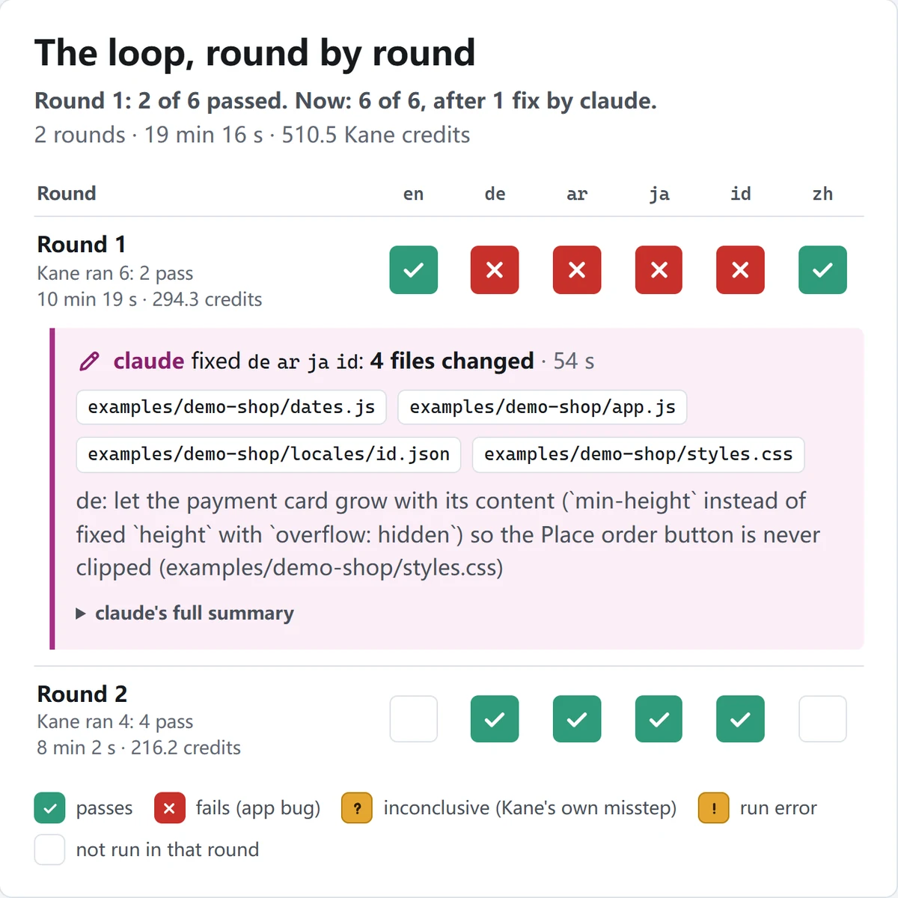
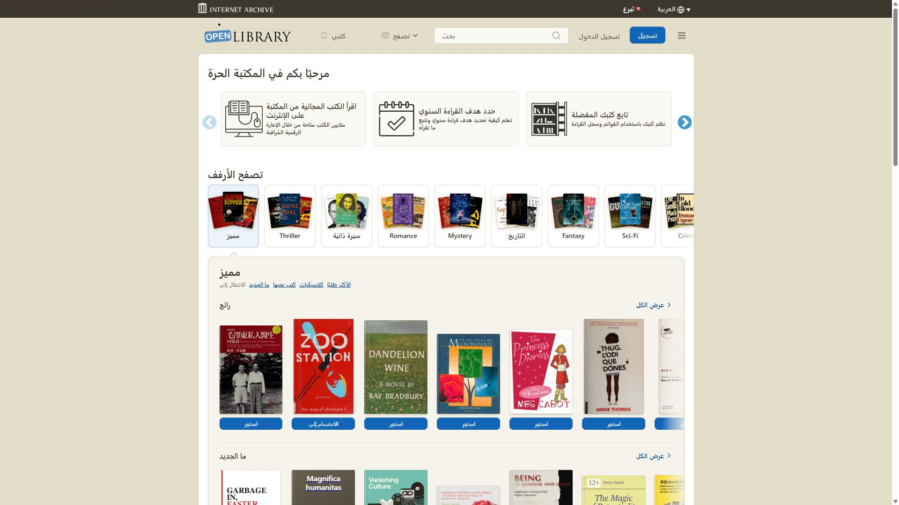

Kane CLI Online Hackathon entry · TestMu AI · November 2026
One Kane test. Every language your app ships.
Locale check runs one plain-English Kane CLI objective in every language of your web app, in a real Chrome. Claude Code fixes the bugs Kane confirms, and Kane re-runs only the red languages until they pass.
Recorded runs are static pages with Kane's real verdicts, screenshots and replays. Nothing on them calls Kane, and you need no account.

Recorded runs: what Kane caught, and what it missed
Each report is the page Locale check wrote after a real run, with Kane's screenshot, root cause and step-by-step replay for every language.
-
The loop on a six-language shop
- 4 of 6 fail
- Claude Code: 4 files, 54 s
- 6 of 6 pass
Round 1 found four locale bugs:
- Deutsch
deThe payment card clips the Place order button. - العربية
arIn right-to-left, the Continue button is covered. - 日本語
jaA date typed in the page's own YYYY/MM/DD format is rejected. - Indonesia
idA button shows a raw translation key.
Claude Code changed 4 files in 54 seconds from Kane's evidence. Kane re-ran the four red languages, and all six now pass.
-
An agent adds Hebrew, and Kane rejects it
- Claude Code adds Hebrew
- he, ar fail
- One fix
- he, ar pass
Claude Code was asked to add Hebrew as a translation-only change. Kane rejected Hebrew and Arabic: the Continue button was covered.
Claude read Kane's screenshot and switched the help pill from
lefttoinset-inline-start. Kane re-ran both languages and passed them. -
A blind test: one hidden bug caught, one missed
- 2 hidden bugs
- 1 caught, 1 missed
A separate agent planted bugs that the objective's author was not told about, and a generic objective ran against them over two rounds.
Caught: a German date hint showing raw
{Format}placeholders.Missed: Chinese shipping of ¥2,000 on a ¥198 mug. The total still added up, so nothing on the page looked broken to the objective.
A real bug in a real app: Open Library in Arabic
“Arabic homepage retains left-to-right layout.”
Kane, on openlibrary.org (Internet Archive)
The page sets lang="ar" but never dir="rtl", so the Arabic text sits in a left-to-right page.
The issue is drafted and not filed yet.


How it works
-
Describe the check once
Give it your app's URL with a
{locale}placeholder, your locales and one plain-English objective.locale-check init -
Run it in every language
Kane CLI runs the objective once per language in a real Chrome. The report marks each language red or green, with Kane's screenshot, root cause and step-by-step replay.
locale-check run -
Let Claude Code fix the red ones
Failures Kane confirms as app bugs go to Claude Code with Kane's evidence. Claude edits the code, and Kane re-runs only the red languages until they pass.
locale-check loop
Run it on your app
You need a Kane CLI login and Kane credits. The 5‑step checkout objective used about 45–60 credits and 1.5–3.5 minutes per language.
To let Claude Code drive it, install it as a skill.
npm install -g @testmuai/kane-cli github:freddy-tama/locale-check
kane-cli login
locale-check init
locale-check run
locale-check loop
locale-check install-skill # optional: use it as a Claude Code skill